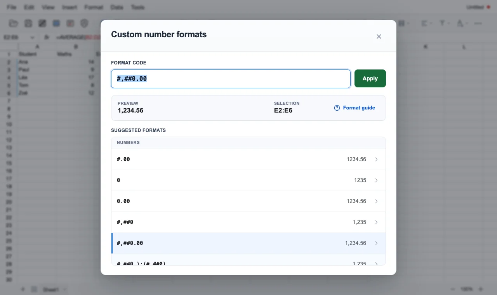

Number formats
A format changes how a number is displayed, not its value: calculations keep all the decimals.
Choosing a format
Format › Number, or the Automatic list of the toolbar.
| Format | Example |
|---|---|
| Automatic | 1200.09 |
| Plain text | 1200.09, aligned left; the entry stays a text |
| Number | 1200.09 |
| Percent | 120009.00%; 0.25 becomes 25.00% |
| Scientific | 1.20E+03 |
| Accounting | $(1,200.09) |
| Currency | $1,200.09 |
| Date, Time, Date time | for dates: 11/29/2017, 3:00 PM, 15:00… |
The currency symbol is that of the interface's language.
| Button | Effect |
|---|---|
| percentage | |
| one decimal less | |
| one decimal more |
These buttons also apply to the numbers of a list. To round the value itself, use ROUND.
Custom format
Format › Number › Custom number format…: choose a suggested format, or write a code. The preview shows the result; Format guide recalls the signs; Apply gives it to the selection.

| Sign | Role | Code | 1234.5 is displayed |
|---|---|---|---|
0 | a digit, zeros included | 0.00 | 1234.50 |
# | a digit if it is useful | #.## | 1234.5 |
, | groups thousands | #,##0 | 1,235 |
% | percentage | 0% | 123450% |
"text" | a text, a unit | 0.0 "m" | 1234.5 m |
E+00 | scientific notation | 0.00E+00 | 1.23E+03 |
; | formats for positive, negative, zero, text | 0;-0;"none" | 1235 |
[Red] | color | 0;[Red]-0 | negative numbers in red |
The code is typed with the separators of the language; the window shows the form in which it is saved (#,##0.00), the same as Excel's.
Dates and times
| Code | 29 August 2026, 2:30 PM |
|---|---|
dd/MM/yyyy | 29/08/2026 |
d mmm yyyy | 29 Aug 2026 |
dddd d mmmm yyyy | Saturday 29 August 2026 |
hh:mm | 14:30 |
dd/MM/yyyy hh:mm | 29/08/2026 14:30 |
Units
Under Units, formats such as 0.00 "V", 0.00 "Ω", 0.00 "mm": the cell remains a number, which can be calculated with.